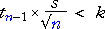
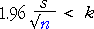
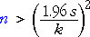

How much data do I need to collect?
This is one of the most common questions that statistical consultants are asked. Data collection is expensive, so there is a clear desire to keep sample sizes as low as possible. However insufficient data means that the parameters of interest cannot be estimated accurately enough.
Consider estimation of a population mean, µ, from a random sample of size n. A 95% confidence interval will be of the form

If we want our estimate to be within k of µ with probability 0.95, then we need n to be large enough that

Provided we can make a reasonable guess at the likely value of the sample standard deviation, s, it is possible to determine the necessary sample size by trial-and-error in the above inequality.
How many plots of corn should be planted?
Researchers want to estimate the yield (in bushels per acre) of a new variety of corn. The corn will be planted in plots and, from previous experience with other varieties of corn, it is expected that the yield in a plot will be just over 100 bushels per acre with standard deviation about 8.
| How many plots should be planted to estimate the mean yield to within 2 bushels per acre with probability 0.95? |
|---|
The following diagram helps with the calculations.
Drag the slider to set the standard deviation to 8.
Drag the sample size slider until the '±' value is less than 2. Verify that the sample size should be 64 or higher.
(The diagram can also be used if a maximum standard error or confidence interval width has been specified.)
Obtaining the sample size by solving an equation
Provided the sample size will be reasonably large, it is possible to replace the t-value in the above inequality by 1.96. For our estimate to be within k of µ with probability 0.95, we therefore need

This inequality can be re-written in the form

In practice, it is best to increase n a little over this value in case the sample standard deviation was wrongly guessed.